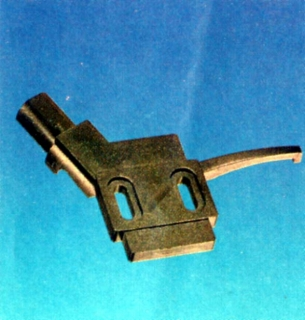
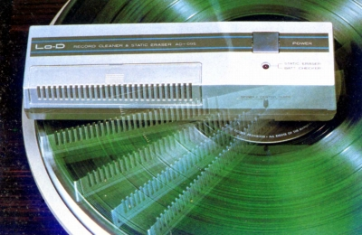
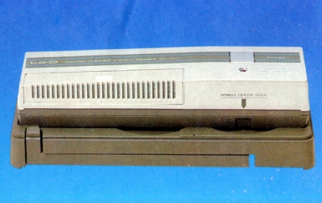
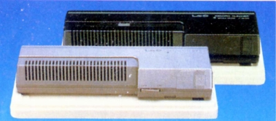

その他の製品
�@ストレートアーム用ヘッドシェル
HT-SH8

■価格 1,200円
■適応機種 HT-500、HT-467、HT-465、HT-6M�U、HT-338
HT-M70、HT-M50、HT-10、HT-78、HT-RM8、HT-38
�A自走式レコードクリーナー
AD-095
 
■価格 8,900円
■備考 自走式クリーナーに除電機能をプラスしたもの。
除電はコロナ放電方式。
電源は単3電池4本。電池寿命はLP盤約50面（アルカリ電池）。
AD-093

■価格 4,500円
■備考 自走式クリーナー。
電源は単3電池2本。電池寿命はLP盤約50面（アルカリ電池）。
Lo-Dのインデックスへ